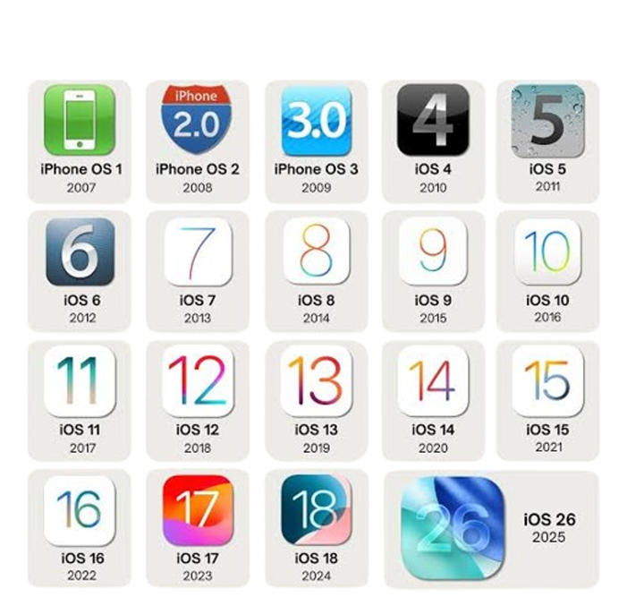
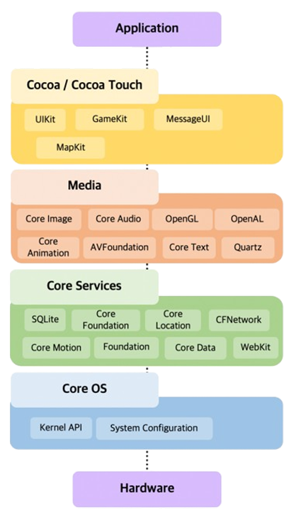

WHAT IS
iOS?
Overview & History
In 2007, Apple released the first touch-screen smartphone, and with it, the first version of iOS (named as such for being the operating system for Apple’s line of ‘i’ mobile devices), not very different from their MacOS.
This first version of iOS allowed for integrated use of the device’s camera, browser (safari), media player, and text message system.
iOS wasn’t given its name until its second version, which was the first version that allowed developers to program their own applications.
In subsequent years, Apple added many key functionalities to iOS, building on the core architecture. For example, iOS 4 brought FaceTime, and iOS 5 brought Siri, iMessage, and the notification system.
In 2019, iPadOS, built on the same system as iOS but more specialized for larger iPad screens, was released


Architecture
iOS uses a layer based architecture, reaching from the hardware to the elements the user interacts with.
The Core OS Layer communicates directly with the hardware, as well as implementing several low level systems
The Core Bluetooth Framework, Security Services Framework that protects data, and the Accelerate Framework to perform calculations
The Core Services Layer is built on top of the Core OS Layer, integrating system services used across applications.
Data: CloudKit Framework allows data sync with iCloud, Core Foundations framework implements basic data management, Core Data Framework mediates data with Model-View-Controller app set-ups
Services: Core Location Framework provides location services, and HealthKit Framework provides the user’s health data
The Media Layer controls all graphical functionalities in the OS
Rendering: Core Graphics Framework provides support for simple vector and image rendering, Core Animation integrates visual animations and effects to run efficiency
Playback: Media Player Framework allows playback of media, especially iTunes, and AV Kit gives the user intuitive controls for video playback
The final, Cocoa Touch layer mediates high-level UI frameworks
UIKit framework serves as a basis for creating UIs that take user input
EventKit Framework connects applications to calendar data, GameKit Framework integrates Apple’s Game Center into apps, and MapKit Framework provides support for embedded interactive maps